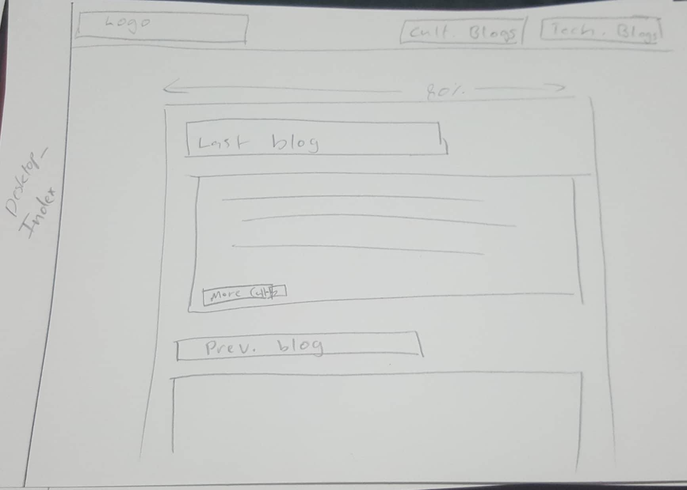
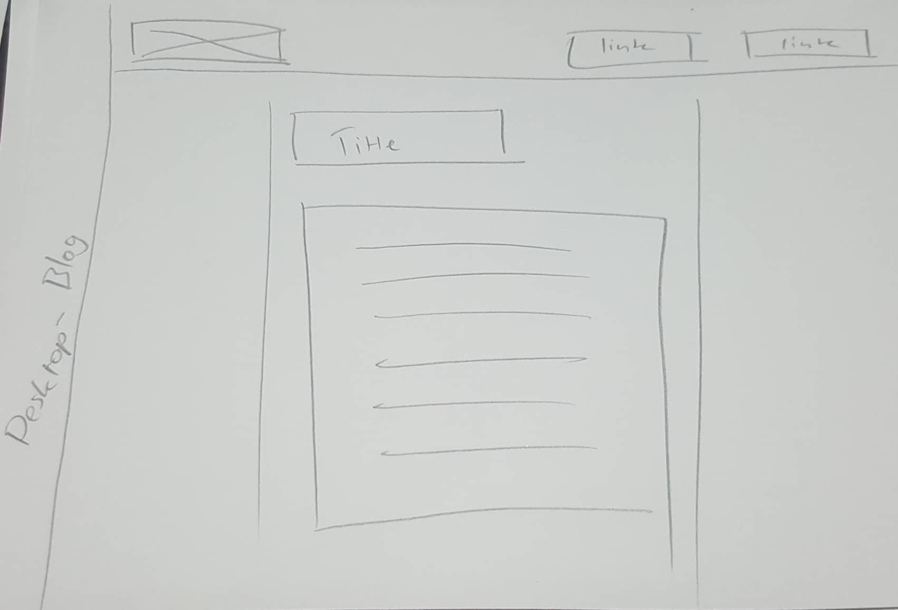

Technical Blog 3: Responsive Frameworks and Mobile-First Design
What is a responsive site, and why is responsiveness important?
A responsive site is one that scales and adjusts itself depending on the size and type of screen being used to view it. This is important as users view websites on many different kinds of devices, ranging from mobile to desktop monitors, so websites need to work on each kind of screen without breaking or becoming difficult to use.
What is mobile-first design, and why is it important?
Mobile-first design is the idea of building your website for mobile scale first then expanding out to desktop. It also means that your CSS should default to mobile scaling and format, and only when exceeding a certain size go back to desktop proportions. It's important because it makes developing a website that works for all sizes of platforms much easier: it's easier to make content bigger than to attempt to squish it down to mobile size. It also means you're not likely to accidentally have content/HTML/CSS that does not work for mobile.
What are frameworks? What are their pros and cons?
Frameworks are pre-built CSS rulesets and building structures that make developing websites simpler. The general pro is that is expedites the process of website development. However as it hides some aspect of how the website works from the developers, it can hinder learning.
What is a wireframe and why do we use them?
Wireframes are a technique used by website designers to work out the layout of content on a page without being distracted by design details or colour. They also are an effective reference point to develop from for the actual coders, and are a good way to convey website design to clients without them getting distracted by other elements.
What aspect of your wireframes did you find difficult to implement? Why?
I found the header bar quite tricky, particularly getting the menu elements to sit correctly in it. I will revisit it when I understand CSS a little better and polish it a bit! There were also other elements I had planned that I realised later I couldn't implement without Javascript (i.e. the hamburger-icon dropdown menu for mobile). Again, when I've worked on Javascript I will add that in. (Also, honestly, getting these pictures to sit right took 40 minutes and drove me mental!)
 